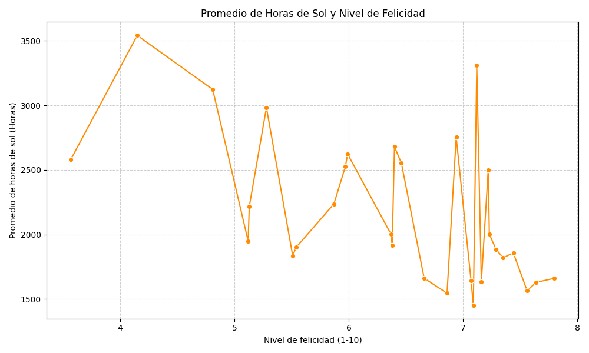
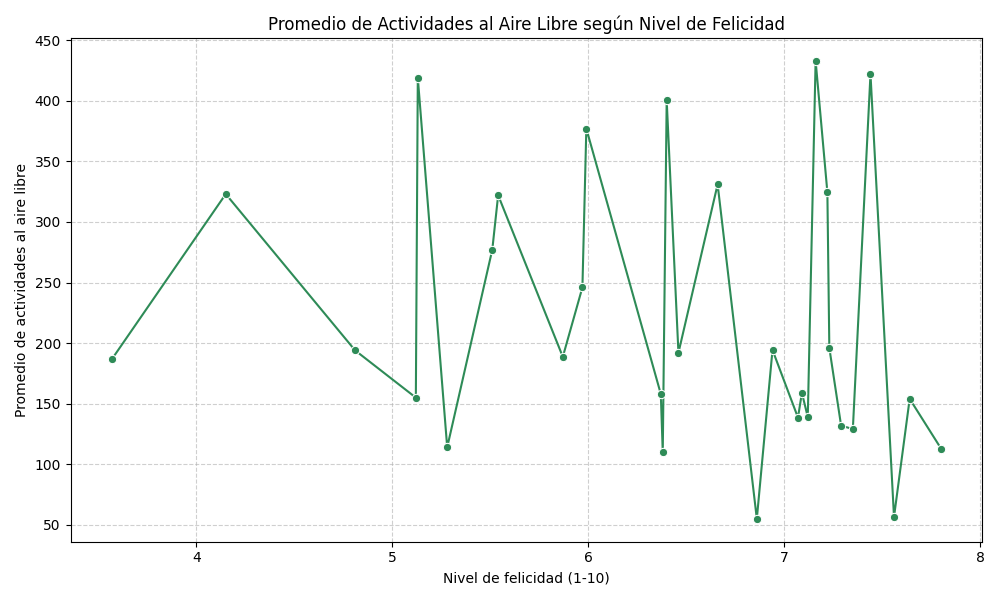

☀️ Relación entre Horas de Sol y Felicidad
Analizamos cómo la exposición al sol se relaciona con los niveles de felicidad .

⚖️ Niveles de Felicidad (Top 10)
Comparación de las 10 ciudades con mayores niveles de felicidad.

⏳ Horas de Sol en Cada Ciudad (Top 10)
Explorames que cantidad de sol se recibe en cada ciudad.

🏃 Actividades al Aire Libre y Felicidad
Relación entre el nivel de actividades al aire libre y la felicidad reportada.
